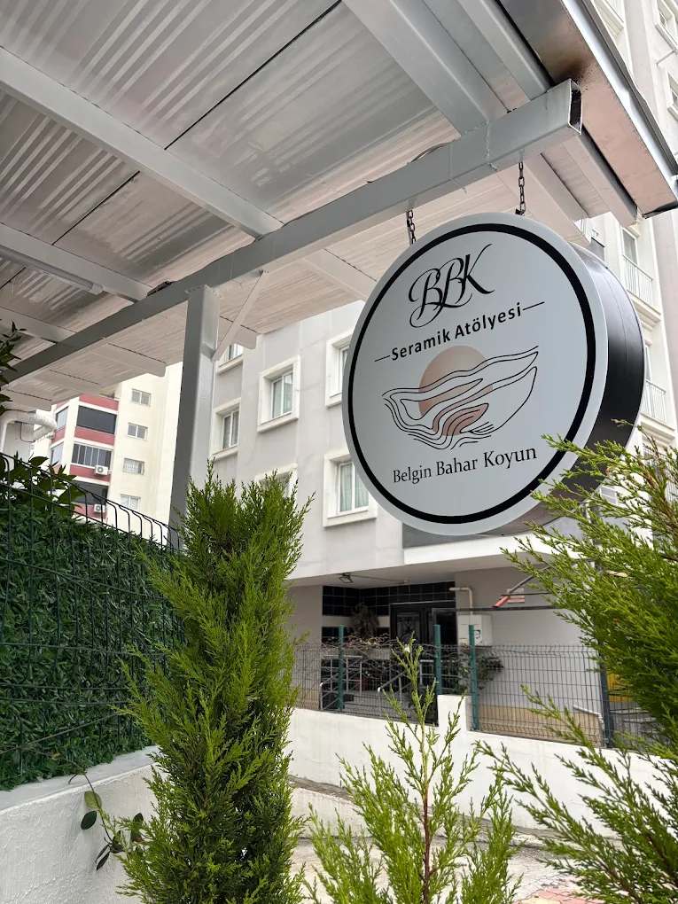

BBK Seramik Atölyesi
Sessiz Lüksün Seramik Yorumu.
Belgin Bahar Koyun imzasını taşıyan BBK koleksiyonları; zarif oranlar, dingin dokular ve zamansız bir estetikle mekanlara seçkin bir karakter kazandırır.
İnstagram'da keşfet
Konum
Atölye Adresi
Huzurevleri, 77039. Sk., 01360 Çukurova/Adana